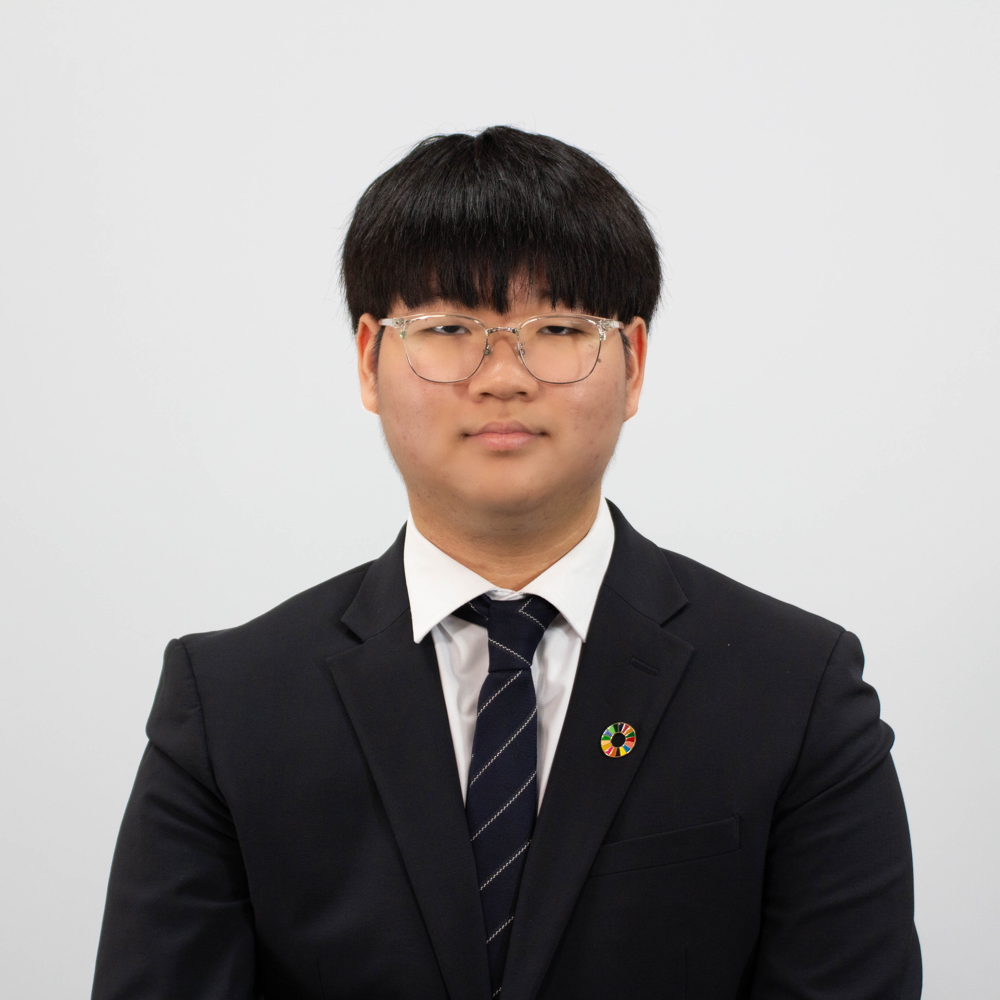

Chair Letter
Fellow chairs, honorable delegates, staff, and respected directors,
I am Hojin Han, the head chair of DISEC. It is beyond my great pleasure to serve you in the committee room. I will ensure that I oversee the committee with fairness and full commitment. You can always reach out if you experience any discomfort during the conference.
Through the three days of your journey, I hope each of you to be guided by courage. Nobody is perfect, and setbacks are steps forward in your success. Looking back on my own Model UN journey, I began as a quiet delegate who was often too afraid to raise his placard. Like many others, my first conference was far from successful. However, instead of giving up, I chose to take a chance. I raised my placard a little higher, asked questions, and delivered a few speeches with a little more volume. That small step gave me the courage I needed, and now here I am, writing this letter as your head chair. So, I want you to push yourself, whether you are just starting or experienced. Because each of you deserves to be the best version of yourself and to be led by courage.
Best,
Hojin Han
Head Chair of the Disarmament and International Security Committee, KISMUN’25